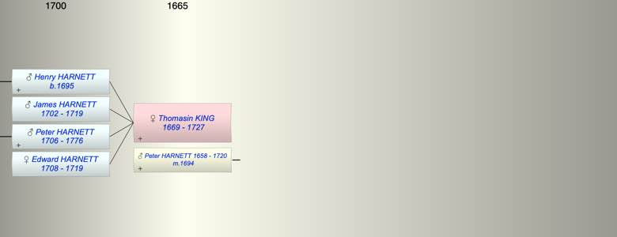

| [Index] |
| Thomasin KING (1669 - 1727) |
|  |
| b. 1669 |
| m. 13 Sep 1694 Peter HARNETT (1658 - 1720) at Westbere, Kent |
| d. 1727 aged 58 |
| Children (4): |
| Henry HARNETT (1695 - ) |
| James HARNETT (1702 - 1719) |
| Peter HARNETT (1706 - 1776) |
| Edward HARNETT (1708 - 1719) |
| Events in Thomasin KING (1669 - 1727)'s life | |||||
| Date | Age | Event | Place | Notes | Src |
| 1669 | Thomasin KING was born | ||||
| 13 Sep 1694 | 25 | Married Peter HARNETT (aged 36) | Westbere, Kent | by licence 7 Sep 1694 | |
| 1695 | 26 | Birth of son Henry HARNETT | St Laurence | bap 26 Sep 1695 ex FMP PR | |
| 1702 | 33 | Birth of son James HARNETT | St Laurence | bap 26 May 1702 ex FS | |
| 1706 | 37 | Birth of son Peter HARNETT | St Laurence | ||
| 1708 | 39 | Birth of daughter Edward HARNETT | St Laurence | bap 29 Apr 1708 ex FS | |
| 1719 | 50 | Death of son James HARNETT (aged 17) | St Laurence | Note 1 | |
| 1719 | 50 | Death of daughter Edward HARNETT (aged 11) | St Laurence | Note 2 | |
| 1720 | 51 | Death of husband Peter HARNETT (aged 62) | |||
| 1727 | 58 | Thomasin KING died | |||
| Note 1: buried 6 May 1719 son of Peter and Thomasin |
| Note 2: buried 1719 son of Peter and Thomasin ex FMP |
| Created on a Mac™ using iFamily for Mac™ on 8 Oct 2023 |